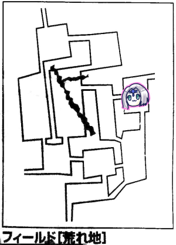
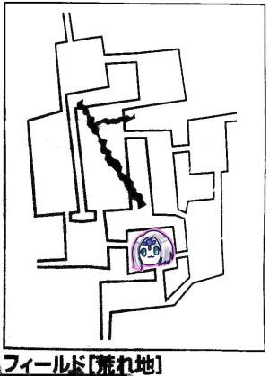

今回はあまり間が開かなかったエターナルはーじまーるよー！
GM「まずゲームを始める前に、プレゼントがあります。リプレイを書いてくれた人とコマを作ってくれた人に」
クトゥルフのダイスマットとコースター！これは使わざるを得ない！
さて、前回はオアシス急襲のミッションを受けて、ドレイク隊にぼこぼこにされつつも勝ってそのまま逃げ帰ったんでしたね！
というわけで村です。買い物して再出発。
GM「では村の外へ移動したので、代表者4d6振ってください」
ブルーローズ「じゃあ振ります、ころころ…おおー、なんか、いい感じです」
GM「具体的な数値で言ってください」
ここで私のメモにオアシスの61から57に減りましたって書いてあるんですけどそれじゃ全部1になりますよね？聞き間違えましたか。
ネタバレするとこれ以降は減らないのでまあ問題ないでしょう。オアシスへ向かいます。

GM「ではイベントを振ってください」
ブルーローズ「4でーす」
GM「荒地イベントです」
ブルーローズ「5です」
GM「シルフに出会いました」
ピーター「やっほー！」
ブルーローズ「出た精霊式挨拶」
みぞれ「多分精霊語のやっほーだけはみんな言えるようになってる」
GM「シルフは魔物を見かけた場所を教えてくれます。これでイベント振る際にプラスマイナス1できるようになりました。効果は荒れ地フィールドから出るまで持続します。戦闘狂がプラスにしないことを祈りましょう」
ナナシ「みぞれー」
みぞれ「なんでやねん」
みんなで自由行動で探索。
GM曰く、今回から成功したら全員振って一番高いのを適用してよいことになりました。遺跡探索が捗りますね！
GM「あ、銀貨袋はアイテムとして使うことはないから計上しちゃっていいよ」
ピーター「銀貨袋、今はアイテムとして計上してます」
「計上しといてー」

南へ移動しました。
タッシュ「そこにはドレイクさんの死体が！」
GM「そこには傷だらけの腕があり…どぎゃーん！…うそです」
ジョジョネタだったようです。
GM「じゃイベント振ってください」
みぞれ「敵に会いたくないでーすころころ、4です。なので3」
GM「旅人イベントです」
タッシュ「セズウィック村の貴重な商業値来たか？」
みぞれ「6です」
GM「旅人がいます」
旅人「この辺も大変なことになってきたねー、立てこもりそこねてさー」
ブルーローズ「ドレイクいましたしねここ」
旅人「北側にいたコカトリスから逃げてきたんだよね」
GM「というわけで主はここにいます」
「これは巣にいますね」
「前回ブルーローズの言った通りだった」
「主レーダー」
GM「ブルーローズ1d6してくれる？」
ブルーローズ「4です」
GM「ふむ、では次に主の移動が発生しても動かないことが分かります」
「いえーい」
ブルーローズ「今なら村への道は安全だと旅人に教えます」
タッシュ「村人が1人増える！」
自由行動で探索。今回からピーターに代わり、ナナシが持参のPCでアイテム管理をしています。
みぞれ「だんだんこのゲームデジタル化してきた」
ブルーローズ「アナログゲームとは」

オアシスへ向かいました。
GM「オアシスの周りには騎士団が常駐しています。ゼノヴィアさんが迎えてくれますよ」
ブルーローズ「無事だったんですね！」
ゼノヴィア「ああ、だが我々はまだ三方向から包囲されている」
「東はぶちのめしました！」
「あと二箇所だな」
「西と南！」
ブルーローズ「一応籠城はできてるんだね、今被害状況は半分ぐらいかな？」
GM「はい、これで星一個獲得になります」
ナナシ「星ってなんだっけ」
GM「終了後に200経験点になるやつ」
ブルーローズ「オアシスで休憩はできますか？」
GM「できます」
タッシュ「前回村に戻る必要なかったか」
「前回はオアシスがどうなってるかわからなかったし？」
GM「イベントがあるの忘れてたわ、お願いします」
ピーター「敵と会いたくないでーすマイナス1！…6」
ブルーローズ「でもここって敵が出てこないんじゃなかったっけ？」
GM「今は別よー、1d6どうぞ」
ピーター「1です」
GM「お、これは初めて扱うぞ、トカゲのような頭部と長い尻尾を持った身長3mぐらいの魔物が2体」
ここで注文した食事が来たので休憩に入りました。
ピーターの手書きのアイテムリストをPCに打ち込んでいたナナシ「うさちゃんこれ何？」
ナナシが指したアイテムを見たみぞれ「マザえ…？」
同じくアイテムリストを見たブルーローズ「金緑A200ガメル」
アルケミストワークスとにらめっこするピーター「該当するものがない、一番近いのが魔材だけど金額が違うや…いいや、よくわからないものとして破棄しよう。あれー？なんか割れてるものがカバンの底にあるなー？」
みぞれ「こないだ管理は完璧だとか言ってなかったっけ」
ピーター「言ってた気がする。魔力ありそうだから妖精にあげよう」
打ち込み作業が終わったナナシ「今パーティーのアイテム全部換算すると2万超える」
ブルーローズ「2人まで死ねるよ！」
みぞれ「やめて」
ブルーローズ「これ結局ピーターが管理しなきゃいけないんじゃない？どうするの？」
ピーター「ななっしーに管理してもらうけどアイテムは私が持ってる体でいきます。実際今までその中のアイテムを錬金に使ったことないし」
みぞれ「あ、そうだったんだ？てっきりいくつか使ってるものだと思ってた」
ナナシ「今、かけらは42個あります」
「守りの剣ほしいなー」
みぞれ「ていうか村に自宅が欲しい」
GM「名誉点を支払って建てることはできるね」
タッシュ「大きな邸宅を買ってみんなで住むとか」
「いいねー」
タッシュ「問題は名誉点をみんなで寄せ集めできるのかってことと、維持費が2万かかること」
GM「でも自宅が持てるのいいよね、自宅持てるキャンペーンってなかなかないよ」
タッシュ「大体みんなあちこち飛び回ってるもんな」
雑談に花が咲きましたが、適当なところでエターナルに戻ります。
「えーと、尻尾の長いやつが2匹だっけ」
「ラミアかな？」
「トカゲ頭って言ってたよ」
GM「あとは美しい女性の上半身と蛇の下半身を持つものが1体います」
「こっちがラミアだったわ」
ピーター「魔物知識判定しまーす」
GM「はい、トカゲ頭はギルドレックLV6、1体の方はラミアLV6、両方弱点抜きました」
ギルドレックは命中力+1が、ラミアは土属性+3が弱点です。
GM「戦闘開始前に防衛ポイント使うか決めてください」
「残りいくつだったっけ？」
GM「5点ですね」
「両方LV6だから使いたくても使えないな」
「そもそもこれ通常戦闘だからあんまり使いたくない」
ピーター「そういやウォール系どうなりました？」
GM「見つかりませんでした。使わないでとしか言えないです」
ピーター「了解でーす。ではスネアを3体にかけます」
GM「抵抗失敗、全員転びました」
ピーター「あとヴォーパルウェポンをブルーローズに」
タッシュ「あっファイアボール撃てるようになったんだ！撃っちゃおうかなー！真語魔法ここまで範囲魔法ないんすよ」
ここで作戦タイム。
みぞれとブルーローズでギルドレックを1体倒してナナシに後ろに抜けてもらうことになりました。
この作戦、タッシュが魔法撃つと制限移動で3mしか動けないから乱戦形成ができないことになるので、魔法は我慢してもらいます。
ブルーローズ「異貌化して前進、キャッツアイマッスルベアー、魔力撃トンファーでギルドレックを攻撃！」
GM「弱点が命中+1だから…命中しました」
ブルーローズ「威力振りまーす、よっし出た！」
みぞれ「え、いくつ出たの？」
ブルーローズ「4！」
いつも威力ファンブルしてるから4でも出るって思っちゃうんですね…
ブルーローズ「えーと23です！追撃します！」
GM「スネアが入ってるので命中です」
ピーター、小さくガッツポーズ。
ブルーローズ「すげー、8も出たよー！26ダメージです！」
みぞれ「タゲサソリバレキャッツアイでギルドレックに攻撃！わ、高い！21！」
GM「避けられません」
みぞれ「12ダメージ！撃破！」
GM「これ前衛全力でぼーんして後ろに行くと思ってたけど、ナナシ(作戦立案者)のタッシュ先生愛を感じるなあ」
タッシュ「前に出てギルドレック殴ります」
GM「回避ー」
ナナシ「それじゃラミアに突撃して」
「待てお前どこへ行くんだ」
ナナシ「あ、俺時間に喧嘩売ってた！」
時間管理してるコマが戦闘で使うコマと勘違いされてました。
ナナシ「ウィップでラミアに首絞め挑発攻撃します！命中-4、キャッツアイしてベースが8ですー！とう！あっ5…俺にしてはまあまあだ」
GM「回避ファンブルしました」
ナナシ「よっしゃ首絞めるよー！12点！これで呪文は使えまい！」
GM「ファンブル表はつるぎのかけら分のダメージ…関係ないな！」
ブルーローズ「ラミアかわいそう、魔法使えないのに挑発攻撃までされてるからスカートの刑じゃん」
ブルーローズ「どう、美女の首締めてる感想は」
ナナシ「気持ちいいー」
ブルーローズ「えっ」
GM「じゃこっちのターンね！ギルドレックの攻撃！立ち上がります！行動表によると傷ついてる方を攻撃…どっちも傷ついてないからダイスで決めるよ！ころころ…タッシュに攻撃」
タッシュ「回避！」
GM「次ラミア！呪文封じられてるからどうしよっかなー、まず起き上がってー、絡みを解くのは挑発攻撃受けててもできるんだっけな？」
ピーター「前にブルーローズが絡みしてた時はそのままゼロ距離で殴り合ってたよね」
GM「これ命中5差あるんだよなー、でスネア分で7あるからもう解いて終了にします」
ナナシ「絡みって手番終了時にダメージ受けることになってるんだけどどうなるんだろう？」
ピーター「解いたからないんじゃないの？」
GM「これ『手番終了時に』ダメージを受けるとしか書いてないんだよ、『絡んでいる状態だったら』って条件を書いておくべきなんだよね」
ナナシ「これかわいそうだからいいんじゃない」
ブルーローズ「上半身美女だからでしょ」
タッシュ「呼吸の困難からダメージを受けるって書いてあるから解けたら受けないでしょう」
ブルーローズ「ソードワールド、想像力の試される遊び」
GM「交渉力が試される、もうこういうのはいっこずつ決めていこうな」
水中で息ができるエルフはこの場合ダメージ入らないのでは？みたいな話にもなりましたが、エルフも絡みが入ったらダメージ入るということになりました。
ピーター「スネアしまーす、2倍がけで14！」
GM「またかよー起き上がるたびに転ばしてーこういうのドラえもんの道具にあったよね」
みぞれ「ころばしやかな」
GM「それだ」
ブルーローズ「ころばしやピーター」
GM「ギルドレック転んだ、ラミアは抵抗しました」
ピーター「じゃあラミアさんにはパラミスをプレゼントしまーす」
ブルーローズ「ギルドレックを魔力撃トンファーで殴ります！ろく、たす」
ナナシ「6じゃないよ7だよ」
ブルーローズ「ぶー」
ナナシ「威力表はここだよー」
みぞれ「介護かな？」
GM「命中しました」
ブルーローズ「えっ、あっ、クリティカル！あるんだクリティカルって！えっ2回連続でクリティカルした！帰りに交通事故にあうんじゃないこれ」
ナナシ「俺が代わりにあうから」
ブルーローズ「37！追加攻撃！20！」
ナナシ「これは勝ったな」
GM「はいダメでーす」
ブルーローズ「へへへへへーそれで1ゾロ出すんでしょ知ってる！お！威力でた！撃破！」
ナナシ「タッシュ先生ファナティかけてくれない？」
タッシュ「じゃファナティかけます、発動判定ころころ…(無言のサムズアップ)(1ゾロ)」
ナナシ「ラミアに首絞めパート2！」
GM「いちたりない、キャッツアイ分かー」
ナナシ「12点ダメージ！」
ナナシ「みぞれチアでいいんじゃない？」
タッシュ「ラミアさん現状なにもできないしね」
みぞれ「じゃチアで」
ブルーローズ「ラミアさんおはなしできるんでしたっけ？(拳ぱんっ)」
みぞれ「拳で語るの？」
GM「こちらの作戦としては、ブルーローズが全部外す…うん夢見すぎだな！目の前のやつをぶん殴ることにしよう！17」
ナナシ「ふっ、まんまとかかったなー！20、あー惜しい」
ブルーローズ「スカートの刑が」
ピーター「パラミス分入ってます？」
GM「あっ」
ナナシ「よっしゃースカートの刑じゃー！」
GM「え、スカートって4差なの？5差だと思ってたわ」
ナナシ「ふふふーいくよー！9！あっ回った、18点！」
GM「しにましたー」
ピーター「ピーターのパラミスに感謝してねー」
ナナシ「ありがとうございますぅ！」
ブルーローズ「これ説得できませんか？」
GM「モンスター撃破は死亡扱いなので無理でーす」
ブルーローズ「うーん、説得して他の編成とか聴き出したかったんだけどなー」
ナナシ「ギルドレック剥ぎます！出た！6ゾロ！13！」
ブルーローズ「じゃとなりのやつ剥ぎます！7！」
タッシュ「ラミア剥ぎまーす、10！」
ピーター＆みぞれ「探索しまーす」
タッシュ「今アイテムいくつあるの？」
ナナシ「つるぎのかけら含めて285個あるわ」
「ピーターの鞄どんだけ詰まってるんだ」
「どうしよう？休憩する？」
ナナシ「俺MPあと7しかない」
ブルーローズ「魔晶石渡そうか？」
ナナシ「俺5個持ってる」
ブルーローズ「ならいいや」
ピーター「ブルーローズ、どっちいきます？にっこり」
ブルーローズ「はっはっはっは、ルキスラにいこうか…いや、ルキスラには結局いけないから、南で」
ピーター「主の話じゃないからどっちでも大丈夫だよ」
GM「10体のモンスターがいます。4つ足で馬の下半身に人間の上半身のやつが、前に5体後ろに1体」
タッシュ「ケンタウロスのランサーとアーチャーじゃね」
GM「ボガードっぽいやつが前に2体、ゴブリンぽいやつが後ろに2体」
ピーター「魔物知識判定しまーす」
結果。
前衛の5体：ケンタウロスLV3、弱点は土属性+3。
前衛の2体：ボガードソーズマンLV4。
後衛の1体：ケンタウロスインペイラーLV6。かけら持ち。
後衛の2体：ゴブリンシャーマンLV5。
GM「待って、こうしちゃおう」
前衛のケンタウロス5体が後ろにいきました。
みぞれ「うあああああーグレネードが届かない場所に！」
ブルーローズ「ケンタウロスインペイラー、戦いともなれば先頭に立ち、一番の強敵に突撃をしかけますって書いてありますが後ろでいいんですか？」
GM「防衛ポイント使いますか？」
「いいんじゃないかな使わなくて」
ナナシ「イニシアチブブースもらいました！ケンタウロスレッグも入れて…先制取った！ケンタウロスよりはやーい！」
ブルーローズ「じゃバニッシュを後衛に撃ちます！15！」
GM「ランダムで8人から5人選んでください」
ブルーローズ「8面体ふります！7！ゴブリンシャーマン！」
GM「抵抗！」
ブルーローズ「8！インペイラー！」
GM「ファンブル」
ブルーローズ「6面体にしまーす、ケンタウロス」
GM「失敗」
ブルーローズ「2！ケンタウロス！」
GM「失敗」
ブルーローズ「4面体にします！4、シャーマン！」
GM「抵抗！つまりインペイラーとケンタウロス2体がかかりました」
ブルーローズ「効果は個別に振ります！」
みぞれ「あれ、前回まとめて振らなかったっけ？」
ブルーローズ「今回は個別で！インペイラーから振りまーす、毒！命中回避行使判定にマイナスです！次ケンタウロス、ファンブルなのでバーサーク、もう1体が毒！」
GM「バーサークってなんだっけ？」
ブルーローズ「命中+2、回避-2です」
タッシュ「それファナティじゃん」
ピーター「8体に5体を2回撃つことできるんだっけ？」
GM「紳士協定によりできないことになっています」
ブルーローズ「SW2.5なら範囲拡大があるのでできますね」
タッシュ「前後に1発ずつ数拡大でファイアーボール撃ちます」
GM「確実化しなくていいんですか？」
タッシュ「やりません、19！」
GM「目標決めてください、あ、先に前やろう、ソーズマン抵抗します、これクリティカルのみだ、無理、ダメージどうぞ」
みぞれ「ダメージはグループごとに別に振るの？」
GM「グループごとでいいと思います」
タッシュ「うわダメージ低っ…で、後ろはケンタウロス3とシャーマン、インペリアルに当たりました。ダメージはー」
GM「あ、ダメージ振り直すなら行使判定も振り直してね、どうする？」
タッシュ「それならダメージ低くても行使判定高めの方を取ります」
GM「じゃ抵抗しまーす、全員失敗」
みぞれ「うーん、ここはショットガンバレットで後衛を狙います」
GM「後衛に届きますか」
みぞれ「射程の半分で15mになるので届きまーす。タゲサキャッツアイ入れて、おっいいねぇ22」
GM「対象を決めてください」
みぞれ「8面体貸してくださーい、えーと、シャーマン1体とケンタウロス4体です」
GM「ケンタウロス1体のみ抵抗しました」
みぞれ「ダメージ12点でーす。で制限移動で3m下がります」
ピーター「数拡大でファイアボルト撃ちます、6倍がけで！」
ブルーローズ「あ、これ前衛一掃しても私後ろまで走れないです」
GM「既にバニッシュしてるからこのターンはどのみち無理です」
ピーター「異貌化も宣言してないしね」
ブルーローズ「解く宣言してないから」
ピーター「とりあえずMPを12点減らしてー」
GM「12点！？ファイアボルト6倍がけで！？」
ピーター「ファイアボルトMP3なので1減らしてかける6」
GM「やっす」
ピーター「15！」
GM「インペイラー失敗、シャーマン抵抗、ケンタウロス2匹失敗、ソーズマンクリティカル、もう1匹抵抗」←ソーズマン1匹抵抗失敗してるはずなんだけどなんですかねこの記載は
ピーター「ダメージ10です！ケンタウロス2匹撃破！でヴォーパルウェポンをナナシに！」
みぞれ「あれ、これ敵のターンに後ろに抜けてくるなぁ」
ブルーローズ「ナナシが落としてくれるよ」
ナナシ「HP6の方のソーズマンをウィップで挑発攻撃！19！」
GM「むりでーす」
ナナシ「11、クリった、20点ダメージ！」
GM「しにましたー」
GM「こっちのターンね…(場を眺めつつ)詰め将棋みたいになってる」
みぞれ「ｳﾞｧｰこれ前衛にグレラン撃っときゃよかったなー」
ナナシ「それしてたらインペイラー止められたんだけどね」
ここで悩むGMに、残りの弱いやつでナナシを止めてインペイラーを後ろにもっていく作戦を吹き込むプレイヤー。敵に塩を送っていく！
GM「それじゃシャーマンを前に出して行動放棄」
タッシュ「シャーマンの命中率6しかないからね」
ナナシ「はっ…かわいそぅぅ」
GM「ファナティかかったケンタウロスを前線突破させてタッシュに攻撃」
タッシュ「回避！」
ナナシ「タッシュせんせいの戦士っぷりがすごい、次頑強とるんですよねー？」
GM「ケンタウロスがブルーローズに攻撃！」
ブルーローズ「私回避が9だからなー」
ナナシ「もしかしてタッシュ先生とあんまり変わらない？」
ブルーローズ「はっ…回避」
GM「ケンタウロスがブルーローズに攻撃」
ブルーローズ「ファンブル」
GM「ファンブル表お願いします」
ブルーローズ「4」
GM「ダメージ2回振って高い方を採用、18点物理です」
ブルーローズ「残り35点です」
GM「ソーズマンがブルーローズに攻撃」
ナナシ「こいつ残りHP1じゃん、ブルーローズ殴った衝撃で残り削れない？」
GM「ソーズマンは恐ろしい敵です、2回攻撃でさらに追撃が来ます、つまり最大4回攻撃ができます」
タッシュ「え、ボガードソーズマンこんな強かったの」
ブルーローズ「1回目避けました」
GM「2回目いきます、10です」
ブルーローズ「12、避けました！」
ナナシ「底辺の争いだね」
GM「みぞれ聞くわ、通す？」
みぞれ「え？」
GM「通すかどうかは防衛側が選択できます。みぞれが通してくれたらインペイラーがうさちゃんのところに行けるんだけどなー」
みぞれ「は？通さねーわカバディカバディ」
タッシュ「ピーターがMP空の場合は通せばいい」
GM「じゃインペイラーはみぞれを攻撃。あっ低っ、11」
みぞれ「低くても私回避ベース3だから…10」
ピーター「バニッシュ入ってます？」
GM「あっ」
みぞれ「同値回避ー！」
後になって気づいたけどまたこの人ライダースキルで回避+1になってるの忘れてますね。
ピーター「GMー、インペイラーにヒートメタルかけたら武器落としてくれますか？めんどくさいならなしでいいけど」
GM「いや、決めていこう」
ブルーローズ「これなしにしたら絡みも使えなくなっちゃうからね」
ナナシ「絡みはめんどくさくないから！」
GM「めんどくさいからこうする、敵はヒートメタルかかっても武器を落とさない！これでいく！」
ピーター「それじゃせっかく接触できる距離にいるからヒートメタル撃っていい？」
ブルーローズ「お、やってみたかったんだよね、だ」
ナナシ「ところでこのソーズマンの残りHP1誰が削る？」
ブルーローズ「タッシュ先生が」
タッシュ「いややってもいいけどそうすると魔法使えないし？」
ナナシ「こいつ残しておくと次に死人出るから」
「タッシュ先生魔法誘導ないの」
タッシュ「ない。俺の中ではいらないという結論になった。うーん、試しにエネボ撃ってみるか、4倍で、目の前のケンタウロス3体とソーズマンに」
ナナシ「こっち撃ってくれていいよ」
タッシュ「そう？じゃ7倍がけして後ろにも撃つか？」
ナナシ「タッシュ！俺を焼いてくれ！俺ごと撃て！」
タッシュ「MP35点かー」
ナナシ「タッシュ先生MP無尽蔵でしょ、いけるいける」
ブルーローズ「それ人に言われるとむかつくよね」
タッシュ「お、判定18」
ブルーローズ「ナナシお前、自分から言ったんだから避けろよー」
ナナシ「いけるいける」
ブルーローズ「あれ、これ後衛に撃った3つとも誤射する可能性あるの？」
タッシュ「ある、だから確率上げるために3発にした」
GM「ケンタウロスは全員抵抗失敗しました」
タッシュ「後ろはナナシに2発、ゴブシャーに1発行きました」
GM「ゴブシャー抵抗しました」
ナナシ「2回抵抗しましたー、半減だから1発分フルでくるんですけどね！」
タッシュ「10点ダメージです」
ピーター「とりあえずナナシ殴ったら？」
ナナシ「よっしゃー、ゴブリンシャーマン殴る！そういや俺になんちゃらウェポンかけてくれてるんだっけ？」
ピーター「ヴォーパルウェポンな」
ナナシ「挑発攻撃！」
GM「回避失敗」
ナナシ「13点ダメージ、絡んだところ決めますよー、ころころ、腕！武器や爪などの命中-2」
ピーター「えー、じゃー前行って範囲攻撃しますぅー？」
「ピーターキャラ変わってる」
ピーター「自滅覚悟のフレアとかもやってみたいんですけどねー」
みぞれ「それ私も巻き込まれますよね？」
ピーター「盲目状態もどうなるのかわからないんですけどねー、両目と片目で効果が違うっていう」
GM「きゃーーーまためんどくさいやつきた！」
みぞれ「え、なに、盲目にする魔法がなんかあるの？」
ピーター「うん、これ盲目状態にする、としか書いてなくて、効果が不明なんだよね。両目が見えないのと片目が見えない場合は別のところに記載があるんだけど」
ナナシ「SNE細かい仕事しないな」
ブルーローズ「これ今バニッシュ撃ったら全員に当たるよ！」
みぞれ「バニッシュ大好きだな！」
ブルーローズ「バニッシュ大好きだよ！」
個人的にはさっさと殴って欲しいと思ったけど目をきらきらさせて言われたので言えませんでしたとさ。
ピーター「前に移動します！自分にヴォーパルウェポン！でアースハンマー4倍がけ！で全員を狙います！」
みぞれ「この人は魔法誘導持ってるんだよね？」
ピーター「持ってます！必中なので行使判定だけします！11点の物理ダメージでーす」
ケンタウロス2体が落ちました！
みぞれ「タゲサソリバレでで残ったケンタウロスを撃ちます、20」
GM「たけーな！クトゥルフに守られてる！14、ダメでーす」
みぞれ「11ダメージです！撃破ー！」
GM「まだかけら分があります」
みぞれ「え、攻撃したのケンタウロスだよ」
GM「インペリアルじゃないのか、落ちました」
ブルーローズ「キャッツアイマッスルベアでインペリアル殴ります！」
GM「おしい、回避失敗！」
ブルーローズ「25点、追撃しまーす！」
GM「今日女性陣比較的ダイス安定してるな！回避ファンブル。効果は…また剣のかけら分ダメージか」
ブルーローズ「23点です」
GM「しにましたー」
ブルーローズ「この残ったやつなんでしたっけ、ゴブリンシャーマン？じゃみんなでちらって見ましょうか」
ピーター「今こいつナナシに縛られてるんでしたっけ？」
GM「抵抗しませんので逃してもらえませんか？」
ナナシ「だーめーでーすー！今ギュってしてるギュって、ほら逃げてんじゃねーぞ」
タッシュ「どっちがヤクザなのかわからない」
GM「仕方ないから魔法撃ちます」
ピーター「抵抗しなければ、情報くれれば逃がそう」
ブルーローズ「逃してあげてもよくってよ」
GM「遅い。アースハンマー5倍がけ」
ピーター「それ届きますか？アースハンマー射程10mですよ」
GM「……」
タッシュ「10mだと届くのナナシとタッシュだけですね」
ナナシ「こいつウィザーズトゥーム反映してあるの？妖精魔法使うやつにいちいち設定してたらGMの負担半端ないでしょ」
GM「反映させました、荒地だったら土とか既に決めてあります。ではアースハンマー2倍がけ。9点物理、タッシュお前通る？」
タッシュ「2点通った」
ナナシ「いてて」
ピーター「そっか、ナナシを殴りたければアースハンマーすればいいんだ」
ナナシ「知ってる？俺全力移動78mあるんだわ」
みぞれ「私のバイクより速いのか」
ブルーローズ「バイクと並走して追い抜いていくのか」
ナナシ「じゃやっちゃっていいかな？タッシュ先生ファナティください」
タッシュ「なしでなんとかしろよ、お前のせいでもうMPないんだよ」
ナナシ「こっちもタッシュ先生のせいでHP減ってるんだよ！」
ピーター「パラミスやるから黙れよ」
ナナシ「そのまま首絞めるよ」
GM「絡めるってこと？」
ナナシ「あっもう絡んでるんだった、じゃサーベルで挑発攻撃、14点」
ピーター「フレイムアロー撃ちまーす、30m射撃なんで当たりまーす」
ブルーローズ「ナナシに？」
タッシュ「2発撃ってナナシに当てる？」
ピーター「誘導持ってるんで狙わないと当たりません」
GM「抵抗できません」
ピーター「11点！」
タッシュ「ゴブシャーの残りHP3か、俺殴るかな？」
ピーター「じゃあみぞれちゃんに構えてもらって降伏するー？って聞きます」
みぞれ「すちゃっ」
GM「じゃへこへこしながら命乞いをします」
ナナシ「さっきのアースハンマー痛かったなー！」
ピーター「西の方のモンスターの構成を聞きたいです、それによって妖精魔法の構成変更する」
ゴブシャー「見逃してくれるなら吐きますぜ、西の隊を率いているのは怪力の大輪という二つ名を持つゼラって奴ですぜ、すげー頭がいい奴で、実質今回の派兵のリーダーですぜ」
ピーター「種族は？」
GM「オーガです」
「オーガ」
GM「このゲーム、オーガは頭いいんです」
タッシュ「君らのリーダーは？この隊のじゃなくて君たちをここに送り込んだやつ」
ゴブシャー「俺らはこの北の関所から送られてきてるんですよ」
タッシュ「そこの統括者は？」
ゴブシャー「それは…っ！」
GM「ごぶしゃーの目がぐりんと白目になりました」
ゴブシャー「腐敗の…あるじ…！」←ここ腐敗か不敗かわかりませんでした
GM「精神抵抗17でお願いします、今質問したあなた」
タッシュ「俺かよ！18、抵抗した」
GM「声が変わって『いい追求だったな！人間族にも頭のいいのがいるようだ！お前の疑問に答えよう、尖兵を送ったのは私だ』」
タッシュ「お名前を伺ってよろしいですか？」
みぞれ「なぜ敬語」
ピーター「燃やしていい？燃やしていい？」
GM「『命知らずな、聞けるなら聞いてみるといい！』とても発音できない謎のフレーズが聴こえてきました。19で抵抗してください」
タッシュ「難易度上がった！？21！抵抗！」
GM「君は全部の言葉を聞き取れた」
ピーター「タッシュ先生クトゥルフ知識ありますね」
GM「ゲームが変わったよ？ではですね、ブラックザバスを信仰する」
ナナシ「ブラックザバス！？やば、これ即死系の魔法使ってくるやつだ」
タッシュ「で、何様？」
ピーター「ん？」
タッシュ「名前！名前！」
GM「アンデッドジェネラルです」
ピーター「じゃセージ判定します」
GM「いいです、抵抗したのでステータス見ていいですよ」
ナナシ「ありゃー、ちゅよいわねー」
みぞれ「レベル14！？うせやろ」
GM「『わしはお前を見た、お主もわしを見た、わしはお前が死ぬまで追い続ける』
以後、アンデッドジェネラルの使い魔は最優先でタッシュを狙います」
タッシュ「おかしいわこれ」
GM「この辺のレベルになったらお前らもおかしくなってるから」
ブルーローズ「やっぱこれタッシュ先生が主人公でしょう」
アンデッドジェネラル「わしは名乗った、お主も名乗ってもらおうか」
タッシュ「礼には答えるか、タッシュだ」
アンデッドジェネラル「タッシュか、覚えておこう」
ブルーローズ「あ、アンデッドジェネラルさーん！わたくし質問がありますのー！あなたのことは彼、彼女、どちらでお呼びすればよろしいですの？」
みぞれ「そこ！？」
GM「一瞬間があった後に、『そのような呼び方は当てはまらない、超越者とよんでもらおう』」
みぞれ「おもしろい展開になった」
GM「これエターナルにないやつです、サブシナリオでつけてきました、なんでここに蛮族がいるのかまで考えてきましたので」
ブルーローズ「呪いかー、私まだリムーブカース使えないんだよね」
タッシュ「使えてもこいつの魔力14あるし対抗できないよ」
ブルーローズ「で、シャーマンは死んだの？」
GM「死にました」
ナナシ「俺にアースハンマー当てたやつやぞ、死んで当然や」
ピーター「アースハンマー撃ってあげようか？」
ナナシ「全力移動で逃げるわ」
GM「ここの部隊を撃破したので星1つ獲得しました」
剥ぎ取れるだけ剥ぎ取ってオアシスへ戻ります。
タッシュ「絶対魔物に会いたくないからイベントロール2ぐらい下げられない？」
GM「ダメです」
タッシュ「2です、あ、マイナスしたやつが2」
GM「何も起きません」
回復してオアシスで休憩しました。
ナナシ「アイテムの総額が3万ガメル超えました！」
ブルーローズ「これで3人死ねる」
みぞれ「だからそういうこというのやめようよー」
タッシュ「てーれーれーれーれってってー…(ドラクエの宿屋の効果音)」
ナナシ「今やる気ない夜が明けましたね」
タッシュ「アンデッドジェネラルさんに目をつけられたから寝覚めが悪い」

GM「はい、戦闘です。全部で10体います」
ピーター「魔物知識判定しまーす」
GM「普通のボガードLV3が前に5体、レッサーオーガLV4が後ろに2体、オーガLV7が後ろに1体」
ピーター「最後の2匹ファンブルしました…」
みぞれ「あ、じゃ私がライダー技能で判定します。はい成功」
GM「前に2体いるのはメデューサLV4ですね」
防衛ポイントでメデューサ1匹を撃破しました。
ナナシ「先制判定します！…やっぱり怖い！ケンタウロスレッグ入れます！はい11！」
GM「プレイヤー先行です」
みぞれ「グレネードを前衛に撃ちまーす」
GM「対象決めてくださいなー」
みぞれ「グレネードは対象15体なんで全員に当たりまーす」
GM「はい、それじゃ…ボガード全員失敗、メデューサ同値抵抗」
みぞれ「威力は…うぅ低い、10点です。続いてバイクにグレラン撃たせまーす、14、こいつは対象5体です」
GM「6体だから入らないやつだけ1d6振ってくれる？」
みぞれ「なるほど？1だからボガード以外です」
GM「全員抵抗失敗しました」
みぞれ「威力は…10だから、えっと」
タッシュ「それクリティカルやで」
みぞれ「えっまじ？あっほんとだクリティカル10て書いてある、やったー！合計で23点！ひゃっはー！」
GM「え、ボガード1匹以外全部消し飛んだんだけど」
みぞれ「3m後ろに下がりまーす」
「これメデューサ見た場合どうなるの？」
「手番終了時にメデューサいなければおk？」
GM「うーん、今回は精神抵抗してもらいます、8で抵抗してください」
みぞれ「出目6、抵抗しました」
ピーター「カオスブラスト前衛と後衛に2倍がけー」
ナナシ「前衛入れなくてよくね？瀕死のボガード1匹だけやぞ」
ピーター「じゃ後ろだけで」
GM「全員抵抗失敗でーす」
ピーター「14点ダメージです」
タッシュ「じゃ行くかー」
ナナシ「もしかしてもしかしてもしかしてー？」
タッシュ「いや、ファイアボールを後ろに撃ちます。お、すごい、11が出たからー、20で抵抗どうぞ」
GM「はい全員抵抗失敗です」
タッシュ「15点ダメージ！」
GM「よし次誰が来る？」
ブルーローズ「いきますわよー！」
GM「セズウィックの青い悪魔が来た」
ブルーローズ「そう言えば異貌化解くって言ってないや、この前オアシス出入りしてたけどいいのかな」
GM「解いたことにしておいてください、これチェックしようと思ってたのに忘れてたんだよなー」
ブルーローズ「魔力撃トンファーで殴ります！22」
GM「だめです命中」
みぞれ「あれ今ブルーローズ誰を攻撃してるの？」
ブルーローズ「ボガード、かわいそうなボガード」
GM「当たりました」
ブルーローズ「撃破！追加攻撃出す相手がいないわー！」
ナナシ「後衛に突撃してオーガにウィップで攻撃！絡め対象は指定しません！あっキャッツアイ入れて、そーれ！20」
GM「いい値だねー、惜しい18だ」
ナナシ「回った！あっうそうそ、ウィップじゃ回ってない、えーと16点」
GM「防護点7点だから9点ダメージ」
ナナシ「どこに絡んだか決めまーす！6」
GM「翼かな？持ってないから振り直しで」
ナナシ「じゃ3」
GM「腕や手ですね、命中判定に-2」
「この隊列ちょっと面白くない？」
「一直線だｗ」
GM「こっちのターンだね！ナナシを対象にライトニング」
タッシュ「ナナシのとこ乱戦形成してるから対象ランダムになるよ」
GM「あ、そうすると死ぬ奴が出るのか、どうすっかなー」
タッシュ「俺だったらこうするってのがあるけどこれは言わない」
ピーター「やられたら嫌だからね」
GM「それじゃオーガがブラストでナナシを狙います！うわひっく！3で…11」
ナナシ「11かー厳しいなー、13なんだよなー！はい24、抵抗」
GM「威力表振ります！ファンブルです！」
ブルーローズ「オーガ先生今日どうしたんですかー？」
ブルーローズ「あ、みんなメデューサの判定してなくない？」
GM「あー忘れてた、でも巻き戻しなしで行きます」
みぞれ「私だけ判定した…」
ピーター「みぞれちゃんがメデューサ知識判定したからじゃない？」
ブルーローズ「みぞれちゃんメデューサ見てあいつやべーってなって爆破したんじゃないの？」
ナナシ「うさぎは目が悪いからセージ判定失敗したんだな」
ピーター「うん、目は悪いかもしれないけど、悪口はよく聞こえるよー！」
GM「うーんうーん、レッサーオーガがリープスラッシュをナナシに放ちます」
ナナシ「にやり。はいおっけー、抵抗」
GM「11点、の半分だから5点ダメージ」
ナナシ「いてっ」
GM「もう一匹も同じのいきまーす」
ナナシ「抵抗しましたー」
GM「こっちも10点」
ナナシ「1/3削れちゃったわー」
ピーター「スネア3倍がけで撃ちまーす」
GM「スネアで来ましたか」
ピーター「18でどうぞ」
GM「うわー…なにもかもがもう…どうしようもない…レッサーオーガ失敗、もう1匹はファンブル、オーガも失敗、全員転倒しました」
ピーター「ブルーローズにヴォーパルウェポンかけときまーす」
タッシュ「ここはみぞれちゃんにファナティかけとくか、あ、クリった」
ナナシ「ぼくにファナティかけたときはそんなの出してくれなかったのにー」
タッシュ「クリティカルだろうがかかれば同じだからな？」
みぞれ「じゃソリバレのみでレッサーオーガ撃ちまーす。ころころ。……」
タッシュ「どした？」
みぞれ「ファンブル」
タッシュ「みぞれさん？」
タッシュ「レッサーオーガ魔法使えるから頭数減らしていこう」
ブルーローズ「じゃレッサーオーガ狙います、魔力撃トンファーで20」
GM「おしい、失敗です」
ブルーローズ「これ計算しなくてもいいですかねもしかして」
GM「はい、死にました」
ナナシ「あと行動してないのは…あれ、みぞれさん何かしたっけ？」
みぞれ「ファンブルしました」
ブルーローズ「聞かないであげて」
ナナシ「オーガを攻撃します」
GM「回避！」
ピーター「スネアは？」
GM「…回避失敗しました」
ピーター「うさちゃんにー、感謝するといいよー？」
ブルーローズ「今日のうさちゃんは恩を売ってくるタイプ」
ナナシ「10点ダメージ！」
GM「オーガがブラストをナナシに撃ちます」
ピーター「行使判定も-2ですよー」
GM「えっスネアって行使判定もマイナスなの」
ナナシ「はい抵抗」
GM「6ゾロ出た、18点」
ナナシ「ぶえー」
GM「レッサーオーガ、転倒解除してリープスラッシュをナナシに撃ちます」
ナナシ「抵抗しました」
GM「10点ダメージで」
ナナシ「残り10点だ」
タッシュ「第一回ブラストのダメージ出てたら危なかったな」
ピーター「こっちの番だね、ウィンドカッター2倍がけしまーす」
タッシュ「最近思うんだけどさ、真語魔法より妖精魔法のほうが攻撃力高いよね」
GM「2匹とも抵抗失敗しました」
ピーター「12点ダメージ！」
GM「さよならレッサーオーガ」
ピーター「オーガにパラミス撃っときまーす」
ブルーローズ「オーガ殴ってみましょうか」
タッシュ「ファナティかけます」
ブルーローズ「いや、撃ち漏らした時のことを考えると魔法待機してもらった方が」
タッシュ「大丈夫だファナティかけたのに撃ち漏らした奴がここにいるから」
みぞれ「にゃーん」
ブルーローズ「じゃファナティもらいます。魔力撃トンファー、19！」
GM「回避失敗ー」
ブルーローズ「あ！キマシ！クリティカルした！」
GM「トンファーって10でクリティカルなのか」
ブルーローズ「S武器だしね！ダメージ34点！
みぞれ「あ、すげーぴったり落ちた」
ブルーローズ「本当の怪力の大輪を見せてあげるわ！」
剥ぎ取りタイム。
星獲得してオアシスに戻ります。
GM「君たちは無事に包囲網を取り除きました。希望があればここから村に戻ってもOKです」
ナナシ「ルキスラに行ってから戻りたいっていうのは」
GM「ダメです」
「じゃ戻ろう、イベントロール5でモンスターが出る状態も解除したいし」
GM「はい、村に戻りました、ミッション達成です。追加で星2つ、合計で6つになりました。それじゃ清算します。あ、清算する前に1人2500ガメルもらえます。それから『オアシスの守護者』の称号ももらえます。これは名誉点10点に相当します。それからセズウィック村の名声値ーーー(溜め)」
「おいー？」
GM「…と、商業値が5ずつ上がります！」
「商業値やったー！！！」
ピーター「更に施設の効果で1ずつ上昇ですね」
GM「建設ポイント12上がりますね」
ピーター「総合値が45になりましたが村の発展レベルは3でいいんですか？」
GM「発展レベル4ですね、小さな村になります。人口は千人を超えます」
ブルーローズ「商業値12で何ができますか！」
タッシュ「10超えたからね！10超えたからね！」
GM「露店街が建てられるようになります。これを建てるとアルケミストワークスに載っている武器防具を除く5000g以外のアイテムを買えるようになります」
「おおー！建てよう！」
GM「あと、マギテック協会セズウィック支部が建てられます」
ナナシ「魔法武器加工ができるようになる！？」
GM「今、交易宿建ってるよね？あーレベル足りないや、交易宿があると発展レベル5で劇場建てられるようになる」
ピーター「ブルーローズが好きそうなやつじゃないですか」
ブルーローズ「タッシュ先生とアンデッドジェネラルの壮大な物語が上演されるようになります！」
ナナシ「え、俺は？」
ブルーローズ「賑やかし役かな」
GM「そうだ、村の発展レベルが4になったので、君たちが希望すればミッション『守りの剣の探索』が発生します。適正レベル7ですが、サプリメント使ってるのでできるだけ7に近い形にしておくことをお勧めします」
「来た！守りの剣来た！これでかけらが使えるようになる！」
これ達成したらいきなり40個とか50個とかかけらぶちこまれることになるのかｗ
経験点をもらって、各自成長処理を行います。
みぞれ「シューター上げてー、レンジャーもそろそろ上げたいなぁ…ああああああ10足りない」
タッシュ「ファンブルが足りない」
みぞれ「ファンブルは単位だった」
ブルーローズ「パーティー分けて模擬戦してみたいなー」
ピーター「ナナシがいる方が先制取って終わるな」
ナナシ「おれ真っ先にうさぎの首締めにいくよ」
みぞれ「あのね、わたし冒険者レベル5になった時にMP軽減っての取ってるみたいなのね」
タッシュ「みたいってなんだよ、なんかそれ取ったらソリバレとクリバレが同じコストで撃てるって話、した記憶があるんですが？」
みぞれ「ふひっ…あとさっき射撃の期待値12って言いましたけ嘘つきました13です」
タッシュ「魔力計算間違えてた？」
みぞれ「はい」
タッシュ「みぞれさん？」
GM「そうそう、マギテック協会は自動で建ちます。支部長はタビットです。5万ガメル以下のマジックアイテムが購入可能になり、新しい騎獣がレンタルできるようになります。鑑定もしてもらえるようになります。あと新規依頼が発生します。建てますか？建てるの拒否もできます」
ピーター「建てました(記入済)」
ピーター「これ建てましょう、物見櫓。先制値の振りなおしができる」
みぞれ「それ重要。ってこれマス分よりも建てられる建物の数が多いのか…開拓したい」
GM「水道橋建てれば四隅が使えるようになるよ。1マス食うので実質3つ増えます、でも今は条件満たしてないから建てられないです」
タッシュ「これ建物潰せないんだよね？」
GM「潰せる、けど建設ポイントは返ってこないよ」
タッシュ「議事堂建てたら必要建設ポイント軽減できるけど、建築に8ポイント必要なのか…これは元が取れないな、却下で」
GM「そう言えば商業値12だっけ？おしい、ギリギリでハロルドが店を立てられないな」
ハロルドかわいそう。
「はぁ指輪もねぇ、腕輪もねぇ、魔導機バイクも走ってねぇ」
「誰うま」
「ゴブリンいるけど騎士団ねぇ」
「おらこんな村ー嫌だー」
「ルキスラに行ってべこ飼うだー」
成長処理とかしてる時の雑談って結構面白いネタ飛び交ってるんだけど記録してる暇がないのよね！いっそ録音機器持ち込むかどうか悩むところですよ！
というわけで、約1年半に及んだエターナルキャンペーンは諸事情によりこれでいったん休止となります！
次にまた集まれる日を心待ちにしております！
GM「今のところ君らのイベント達成率パーフェクトなんだよね」
「関所逃してオアシスの攻防発生させたのがよかったのかな？」
GM「このペースでいくとあと3～5年はかかるかなー」
「うわ」